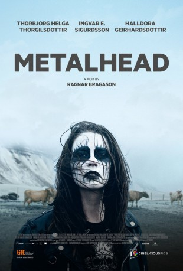

#5656 Metalhead
 
 IMDB-Wertung: 7.1 / 10
IMDB-Wertung: 7.1 / 10  Metascore: 0
Metascore: 0 
Es ist das Jahr 1970 und als Black Sabbath ihr erstes Album aufnehmen, wird in einem tristen Dorf im isländischen Nirgendwo die kleine Hera geboren. Als Zwölfjährige muss sie mit ansehen, wie ihr großer Bruder durch einen tragischen Unfall aus dem Leben gerissen wird. Von dem traumatischen Erlebnis schockiert, übernimmt sie seine Persona samt Lederjacke, Motörhead-Shirt und E-Gitarre. Ihre ganze Jugend trägt sie fortan nur noch seine Klamotten, hört und spielt seine Musik. Trauer und Wut werden mit Songs von bekannten Metalbands und mit eigenen Heavy-Metal-Riffs ausgedrückt. Auch nach der Schulzeit fühlt sie sich von allen missverstanden – auch von ihren Eltern. Diese versuchen durch den Kirchenchor wieder ein wenig am Leben teilzunehmen. Gerade als Heras Rebellion immer destruktivere Ausmaße annimmt, zieht ein junger Priester in den Ort. Das Schicksal scheint sich zu wenden und Hera erkennt, dass sie nicht ihr ganzes Leben lang weglaufen kann…
Jahr: 2013
Dauer: 100 Minuten
FSK: 12
Land: Island Studio: Meteor FilmTonspuren:
Untertitel: Deutsch,
Auflösung: 1080p (1920x808) Größe: 6922 MB
Genre: Drama
Regisseur: Ragnar Bragason
Drehbuch: Gregory Widen
Soundtrack:
Darsteller:
 Ingvar Eggert Sigurðsson als Karl
Ingvar Eggert Sigurðsson als Karl Sveinn Ólafur Gunnarsson als Janus
Sveinn Ólafur Gunnarsson als Janus- Thora Bjorg Helga als Hera
- Halldóra Geirharðsdóttir als Droplaug
- Hannes Óli Ágústsson als Knútur
- Þröstur Leó Gunnarsson als Einar
- Sigrún Edda Björnsdóttir als Anna
- Magnús Ólafsson als Erlingur
- Óskar Logi Ágústsson als Baldur
- Diljá Valsdóttir als Hera, 11 years old
- Mikael Emil Kaarber als Knútur, 11 years old
- Þórunn Arna Kristjánsdóttir als Elsa
- Urður Heimisdóttir als Elsa, 11 years old
- Ole Erik Furu als Ingve
- Hilmar Wollan III als Oysten
- Ragnar Sverrison als Pal Ole
- Brynhildur Guðjónsdóttir als Halldóra
- Pétur Einarsson als Traveller
- Morten Lange als Choir
- Ester Sveinbjarnardóttir als Mother in church
Datei: X:\2013(I-M)\Metalhead (2013, FSK12, 1920x808).mkv seit 02.03.2017
Festplatte: HD 2013(I-Z)-2014(A-Z)
 Es gibt insgesamt 89 Filme in der Gruppe '2013(I-M)'
Es gibt insgesamt 89 Filme in der Gruppe '2013(I-M)'